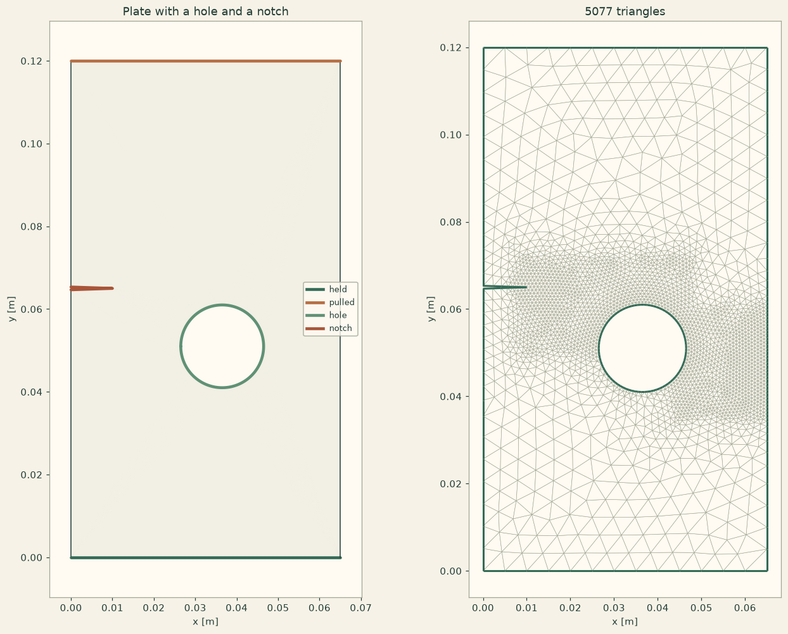

Docs › Examples › Brittle fracture of a holed plate
Fracture mechanics · 2D
Brittle fracture of a holed plate
A brittle plate with an edge notch and an off-centre hole is pulled apart; the crack starts at the notch, curves into the hole and breaks the ligament on the other side.
Run locally with OneSimulation. The example downloads are free. Running them requires an activated runtime. OneSimulation 1.0 · CPython 3.13 on macOS (Apple Silicon), Ubuntu 22.04 (x86-64), and Windows x64. Installation and activation · View pilot plans. Scope of the reference checks.

What it computes
OneSimulation reads the plate from a STEP file, cuts it to its plane and solves the AT2 phase-field model in plane stress with a tension-compression split on a mesh refined where the crack is expected; the crack path is not prescribed but follows from the energy minimisation. The script that builds the STEP file comes with the notebook.
What it checks
The crack runs from the notch tip into the hole and from the hole straight to the right edge; the peak force is 889 N at 0.39 mm. The dissipated energy (135.4 mJ) is 1.18 times Griffith's G_c times the crack area (41.8 mm crack length measured in the damage field, with the mesh factor 1 + h/2l); the excess is the diffuse damage that the AT2 model spreads around the hole and the notch before the crack forms.
Geometry
The notebook starts at the import of the CAD file holed_plate_phase_field.step: STEP (AP242), readable by any CAD program, with the names of the faces that the boundary conditions use. Put it next to the notebook.


The geometry script
The script holed_plate_phase_field_geometry.py builds the geometry with the CAD objects of OneSimulation and writes the file. Change a dimension there, run it, and run the notebook again.
"""Geometry of the OneSimulation example "Brittle fracture of a plate with a hole and a notch".
Builds a plate 65 mm wide, 120 mm high and 1 mm thick with an off-centre hole of 20 mm diameter
at (36.5 mm, 51 mm) and a sharp notch cut 10 mm in from the left edge at a height of 65 mm,
1 mm wide at the edge, with the CAD objects of OneSimulation. The part is written to
holed_plate_phase_field.step; the faces keep the names x_min, x_max, y_min, y_max, the hole wall
is hole.outer_wall and the notch flanks are notch.side.
"""
from onesim.cad.d2 import Profile
from onesim.cad.d3 import Box, Cylinder, Prism
mm = 1e-3
width, height, thickness = 65 * mm, 120 * mm, 1 * mm
hole = Cylinder(
radius=10 * mm, length=4 * thickness, origin=(36.5 * mm, 51 * mm, -thickness)
).named("hole")
notch = Prism(
profile=Profile.polygon(
[(-5 * mm, 64.5 * mm), (10 * mm, 65 * mm), (-5 * mm, 65.5 * mm)]
),
height=thickness,
).named("notch")
(Box(length=width, width=height, height=thickness) - hole - notch).save(
"holed_plate_phase_field.step"
)The notebook
The complete notebook, cell by cell. Run it to produce the figures and the comparison printout.
In a plate with a notch and an off-centre hole the crack does not run straight: it starts at the notch tip, is attracted by the stress concentration of the hole, runs into it and finally breaks the remaining ligament on the other side. Such tests are used to check that a fracture model finds crack paths by itself (M. Ambati, T. Gerasimov, L. De Lorenzis, Comput. Mech. 55, 2015, 383-405, after experiments on a plate of this type).
The phase-field model smears the crack into a damage field \(d\in[0,1]\) of width \(\sim\ell\); the displacement and the damage minimise
where only the tensile part \(\psi^+\) of the strain energy drives the crack.
Setup. A plate 65 mm × 120 mm, 1 mm thick, with a hole of 20 mm diameter at (36.5, 51) mm and a sharp notch 10 mm long at a height of 65 mm; \(E=5.98\) GPa, \(\nu=0.22\), \(G_c=2.28\) N/mm (the material values of Ambati et al.), regularisation length \(\ell=2\) mm, plane stress. The plate comes from the CAD file holed_plate_phase_field.step, written by holed_plate_phase_field_geometry.py with the CAD objects of OneSimulation.
| side | displacement | damage |
|---|---|---|
y_min | \(u_x=u_y=0\) | zero flux |
y_max | \(u_x=0\), \(u_y=\delta(t)\) | zero flux |
x_min, x_max, hole.outer_wall, notch.side | traction free | zero flux |
Reference. Griffith's energy balance: the energy dissipated in forming the crack equals \(G_c\) times the crack area, up to the overestimate \(h/2\ell\) of the regularised functional on a mesh of size \(h\). The crack length is measured in the damage field: the area where \(d>1/2\), divided by the width of this band on the straight last branch of the crack.
import numpy as np
from onesim.cad.exchange import load
from onesim.meshing import TriangularMesher
from onesim.numerics.linear import SparseDirect
from onesim.physics.solid_mechanics import PhaseFieldFracture
from onesim.visualization import plots, theme
theme.set()Geometry and mesh
section cuts the plate at half thickness; the cut faces keep their names. The triangles are 0.8 mm in the region between the notch, the hole and the right edge, where the crack is expected, and grow to 5 mm elsewhere.
plate = load("holed_plate_phase_field.step")
width, height, thickness = plate.size
plane = plate.section((0, 0, 1), origin=(0, 0, thickness / 2))
faces = plane.boundaries
mm, h, ell = 1e-3, 0.8e-3, 2e-3
outside = lambda p, x0, x1, y0, y1: np.hypot(
np.maximum(np.maximum(x0 - p[:, 0], p[:, 0] - x1), 0),
np.maximum(np.maximum(y0 - p[:, 1], p[:, 1] - y1), 0),
)
mesh = TriangularMesher(
target_size=5 * mm,
size_field=lambda p: np.minimum(
h
+ 0.25
* np.minimum(
outside(p, 8 * mm, 48 * mm, 50 * mm, 72 * mm),
outside(p, 44 * mm, 65 * mm, 35 * mm, 60 * mm),
),
5 * mm,
),
).generate(plane)
fig = plots.figure(1, 2, size=(12, 9))
plots.geometry(
plane,
selection={
"held": faces.y_min,
"pulled": faces.y_max,
"hole": faces["hole.outer_wall"],
"notch": faces["notch.side"],
},
labels=False,
title="Plate with a hole and a notch",
ax=fig[0],
)
plots.mesh(
mesh, groups=("all",), legend=False, title=f"{mesh.cell_count} triangles", ax=fig[1]
)
plots.show()Model
The top edge moves up in 55 steps, finely after 0.3 mm. Each step alternates between equilibrium and damage until the damage changes by less than \(10^{-3}\).
toughness = 2280.0
lift = np.r_[0.0, 0.1, 0.2, 0.3, np.arange(0.31, 0.8001, 0.01)] * mm
result = PhaseFieldFracture(
youngs_modulus=5.98e9,
poisson_ratio=0.22,
fracture_energy=toughness,
length_scale=ell,
thickness=thickness,
plane_stress=True,
).solve(
mesh=mesh,
linear_solver=SparseDirect(),
times=lift,
tolerance=1e-3,
max_iterations=3000,
displacements=(
(faces.y_min, "x", 0.0),
(faces.y_min, "y", 0.0),
(faces.y_max, "x", 0.0),
(faces.y_max, "y", lambda t: t),
),
)
x, y = result.coordinates.T
force = result.reactions[:, np.isclose(y, height), 1].sum(axis=1)
peak = int(np.argmax(force))Comparison with the reference
The crack length from the area with \(d>1/2\) (integrated over the triangles) and the band width on the straight branch between x = 50 and 62 mm, the dissipated energy, and Griffith's \(G_c\) times the crack area with and without the mesh overestimate. The AT2 model also damages the material diffusely around the hole and the notch before the crack forms (it has no elastic range); that energy comes on top of the crack itself.
cells = np.asarray(mesh.cells)
corners = np.asarray(mesh.coordinates)[cells][:, :, :2]
edges = corners[:, 1:] - corners[:, :1]
areas = 0.5 * np.abs(edges[:, 0, 0] * edges[:, 1, 1] - edges[:, 0, 1] * edges[:, 1, 0])
broken = result.damage[-1][cells].mean(axis=1) > 0.5
straight = (corners[:, :, 0].mean(axis=1) > 50 * mm) & (
corners[:, :, 0].mean(axis=1) < 62 * mm
)
band = areas @ (broken & straight) / (12 * mm)
crack_length = areas @ broken / band
griffith = toughness * crack_length * thickness
print(
f"peak force {force[peak]:.1f} N at δ = {lift[peak] / mm:.2f} mm; force at the end {force[-1]:.2f} N"
)
print(
f"width of the broken band (d > 1/2) on the straight branch: {band / mm:.2f} mm (AT2 profile on a fine mesh: 2 l ln 2 = {2 * ell * np.log(2) / mm:.2f} mm)"
)
print(
f"crack length = broken area / band width: {crack_length / mm:.1f} mm (straight-line distances: notch tip to hole "
f"{np.hypot(36.5 - 10, 65 - 51) - 10:.0f} mm, hole to right edge {65 - 46.5:.1f} mm)"
)
print(
f"dissipated energy {1e3 * result.fracture_energy[-1]:.2f} mJ, G_c a t = {1e3 * griffith:.2f} mJ, "
f"with h/2l: {1e3 * griffith * (1 + h / (2 * ell)):.2f} mJ; ratio {result.fracture_energy[-1] / (griffith * (1 + h / (2 * ell))):.3f}"
)Figure
The damage before the peak, at the crack's arrival at the hole and at the end, and the force-displacement curve with the energies.
arrival = int(
np.argmax(
result.damage[:, np.hypot(x - 36.5 * mm, y - 51 * mm) < 10.5 * mm].max(axis=1)
> 0.95
)
)
shown = {
"before the peak": max(peak - 3, 0),
"crack at the hole": arrival,
"end of the test": len(lift) - 1,
}
fig = plots.figure(layout=[list(shown), ["force", "force", "energy"]], size=(16, 13))
for panel, step in shown.items():
plots.heatmap(
x / mm,
y / mm,
result.damage[step],
triangles=cells,
limits=(0, 1),
label="damage d",
xlabel="x [mm]",
ylabel="y [mm]",
title=f"{panel}: δ = {lift[step] / mm:.2f} mm",
ax=fig[panel],
)
plots.line(
lift / mm,
force,
xlabel="top displacement δ [mm]",
ylabel="force [N]",
title="Force-displacement curve",
legend=False,
ax=fig["force"],
)
plots.line(
lift / mm,
{
"external work": 1e3 * result.external_work,
"elastic energy": 1e3 * result.elastic_energy,
"crack energy": 1e3 * result.fracture_energy,
},
hlines={"G_c a t (1 + h/2l)": 1e3 * griffith * (1 + h / (2 * ell))},
xlabel="top displacement δ [mm]",
ylabel="energy [mJ]",
title="Energies",
legend="upper left",
ax=fig["energy"],
)
plots.show()Going further
Move the hole in holed_plate_phase_field_geometry.py and write the STEP file again: with the hole further to the right, the crack passes it. Halve \(\ell\) together with the mesh size in the refined region to sharpen the crack.